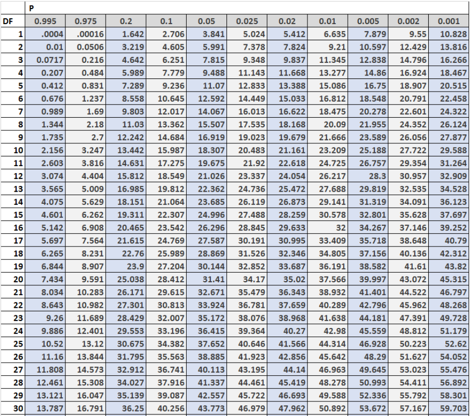

A chi-squared test is a statistical test used to analyze data in large groups. It compares what actually happened (observed frequencies) to what was expected to happen (expected frequencies). This test helps us decide if a difference between two categories is due to random chance or if there's a real connection between them.
There are two types of Chi-Squared Tests:
The Chi-Square test of Independence is a derivable ( also known as inferential ) statistical test that examines whether the two sets of variables are likely to be related to each other or not. It can be used to determine if there is an association between two categorical variables in a many different settings.This test is used when we have counts of values for two nominal (Nominal data refers to categories that have no meaningful order or ranking) or categorical variables and is considered a non-parametric test. A relatively large sample size and independence of observations are the required criteria for conducting this test. They’re used to determine whether your data are significantly different from what you expected. You can use a chi-square test of independence, also known as a chi-square test of association, to determine whether two categorical variables are related. If two variables are related, the probability of one variable having a certain value is dependent on the value of the other variable. The chi-square test of independence calculations are based on the observed frequencies, which are the numbers of observations in each combined group. The test compares the observed frequencies to the frequencies you would expect if the two variables are unrelated. When the variables are unrelated, the observed and expected frequencies will be similar.
In a movie theatre, suppose we made a list of movie genres. Let us consider this as the first variable. The second variable is whether or not the people who came to watch those genres of movies bought snacks at the theatre. Here, the null hypothesis is that the genre of the film and whether people bought snacks are unrelatable. If this is true, the movie genres don’t impact snack sales.
In statistical hypothesis testing, the Chi-Square Goodness-of-Fit test determines whether a variable is likely to come from a given distribution. We must have a set of data values and an idea of the distribution of this data. We can use this test when we have value counts for categorical variables. This test demonstrates a way of deciding if the data values have a “ good enough” fit for our idea or if it is a representative sample data of the entire population.
Suppose we have bags of balls with five different colours in each bag. The given condition is that the bag should contain an equal number of balls of each color. The idea we would like to test here is that the proportions of the five colours of balls in each bag must be exact.
Categorical variables are a subset of variables that can be divided into discrete categories. Names or labels are the most common categories. These variables are also qualitative because they depict the variable's quality or characteristics.
Categorical variables can be divided into two categories:
A Chi-Square test examines whether the observed results correspond to the expected values. When the data to be analysed is from a random sample, and when the variable is the question is a categorical variable, then Chi-Square proves the most appropriate test for the same. A categorical variable consists of selections such as breeds of dogs, types of cars, genres of movies, educational attainment, male v/s female etc. Survey responses and questionnaires are the primary sources of these types of data. The Chi-Square test is most commonly used for analysing this kind of data. This type of analysis is helpful for researchers studying survey response data. The research can range from customer and marketing research to political sciences and economics.
Chi-Square distributions (X2) are a type of continuous probability distribution. They're commonly utilized in hypothesis testing, such as the chi-square goodness of fit and independence tests. The parameter k, which represents the degrees of freedom, determines the shape of a chi-square distribution. Very few real-world observations follow a chi-square distribution. Chi-square distributions aim to test hypotheses, not to describe real-world distributions. In contrast, other commonly used distributions, such as normal and Poisson distributions, may explain important things like birth weights or illness cases per year. Chi-Square distributions are excellent for hypothesis testing because they closely resemble the conventional normal distribution. Many essential statistical tests rely on the traditional normal distribution. In statistical analysis, the Chi-Square distribution is used in many hypothesis tests and is determined by the parameter k degree of freedom. It belongs to the family of continuous probability distributions. The Sum of the squares of the k-independent standard random variables is called the Chi-Squared distribution.
There are a few main steps to follow when conducting a Chi-Squared Test:
Next, gather data on the variables you are interested in examining. This data should be categorical, with each observation falling into one category for each variable. Once you have collected the data, organize it into a contingency table, which displays the frequencies of observations for each combination of categories.
Here's an example of a Contingency Table:
The next step involves calculating the expected frequencies for each cell in the contingency table, assuming that the null hypothesis is true (i.e., there is no relationship between the variables). The expected frequency for each cell is calculated using the following formula:
Eij = (Row Total of Row i × Column Total of Column j) / Grand Total Where:
Once you have the observed and expected frequencies, the next step is to calculate the Chi-Square statistic. This statistic measures the difference between the observed and expected frequencies for each cell in the contingency table. The formula for the Chi-Square statistic is:
χ2 = ∑ [(Oij – Eij)2 / Eij] Where:
For each cell, you subtract the expected frequency from the observed frequency, square the result, and divide by the expected frequency. After calculating this value for all cells, you sum the results to obtain the overall Chi-Square statistic.
Degrees of freedom (df) are a critical component in determining the significance of the Chi-Square statistic. In the case of a Chi-Square test for independence, the degrees of freedom are calculated using the formula:
df = (r – 1) × (c – 1) Where:
To determine whether the relationship between the variables is statistically significant, compare the calculated Chi-Square statistic to a critical value from the Chi-Square distribution table. The critical value depends on two factors: the degrees of freedom and the chosen significance level (often set at 0.05, or 5%). If the calculated Chi-Square statistic is greater than the critical value, you can reject the null hypothesis, indicating that there is a significant relationship between the variables. If the Chi-Square statistic is less than the critical value, you fail to reject the null hypothesis, meaning that there is no evidence of a relationship between the variables.
To find the critical value of your Chi Squared Test, you can either let statistical software calculate it for you of you can use a Chi-Square Distribution Table, ex. below:
To use it, just find your P-Value and your Degrees of Freedom on the table and wherever they intersect is the Chi-Square Critical Value.
When reporting the results of a Chi-Square test in a research paper or article, it is important to provide a clear summary of the findings. Typically, this includes the following information:
You should be aware of two limitations to using the chi-square test. The Chi-Square test, for starters, is extremely sensitive to sample size. Even insignificant relationships can appear statistically significant when a large enough sample is used. Remember that "statistically significant" does not always imply "meaningful" when using the chi-square test. Be mindful that the chi-square can only determine whether two variables are related. It does not necessarily follow that one variable has a causal relationship. It would require a more detailed analysis to establish causality.